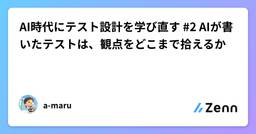
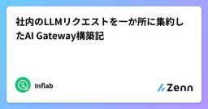

Zennの「生成 AI」のフィード
フィード

AIコードレビューの不合格率が51%→13%に。3モデル中2つは判定していなかった
Zennの「生成 AI」のフィード
自分用のタスク管理アプリを、4ヶ月半ほど自律エージェントに開発させている。実装後の diff を別のモデルにレビューさせ、不合格なら差し戻す「敵対的差分レビュー」を入れていた。その不合格率が、7月の51.1%から10月には13.4%まで下がっていた。ところがログを調べると、3モデルでレビューするはずが、10月は全209件で1モデルしか判定していなかった。残りの2モデルは、すべて unknown（判定不能）。集計処理はそれを除外し、回答した1モデルだけで合否を決めていた。有効な判定が減っていることは、ゲートの異常として通知されていなかった。指標としては良くなっていたので、私はそれを素...
12時間前

Made in Ningen 「人間産コード」は本当に安心なのか
Zennの「生成 AI」のフィード
はじめにこんにちわ。家電量販店で箱の裏を見て「Made in ○○か……」とつぶやいた経験、誰にでもあると思います。2026年、コードにも同じ光景が生まれました。PRを開いて、diffを眺めて、こうつぶやくのです。「これ、Made in AI だな……」この記事は、いま静かに始まっている（と思っている）「Made in Ningen（人間が作ったかどうか）」vs「Made in AI」論争を、かつての「国産 vs 海外製」論争になぞらえて、くだけた感じに、でも最後だけ少し真面目に書いたものです。 第1章：かつて「Made in Ningen」はブランドだった思い返...
14時間前

AI運用の変更を3段階で通知する影響先マップの作り方
Zennの「生成 AI」のフィード
AIのプロンプト、参照FAQ、フォーム項目、確認者を変更した時、関係者全員へ同じ通知を送っていないでしょうか。全員へ知らせると見落とされやすくなり、知らせないと古い条件で返信や確認が続きます。問題は「変更を通知するか」だけではなく、どの変更を、誰へ、いつまでに伝え、どの証拠を残すかを決めていないことです。この記事では、AIを使った問い合わせや社内業務を小さく運用しているチーム向けに、変更を STOP_REVIEW、SAME_DAY_NOTIFY、ROUTINE_LOG の3段階へ振り分ける影響先マップを作ります。外部サービスへの自動通知やAI API接続は扱わず、判断と通知の境界を...
18時間前

保留箱は月1回の見直しで再開か廃止か — 1か月を超えて置かない1行の判定
Zennの「生成 AI」のフィード
商談前メモ5箱の運用では、判断に迷った箱を「保留」に置くことがあります。前回の5箱の状態は月次報告の1行に足すでは、AI案・採用・▲・保留の箱数と前月比を月次報告1枚の来月方針1行に足す書式を扱いました。保留は、止めた行は消さずに降格させるで定めた止めた行の4つの行き先のうちの1つです。保留に置いた箱は放置すると永遠に保留のまま残ります。今回は、保留箱を月1回の見直しで回す扱いです。再開（AI案へ戻す）と廃止（表から消す）の間を、保留を1か月より長く置かない基準で決めます。 1. 保留は何のための置き場か保留は判断の保留: 降格を下す材料がその月になかった箱を置いておく場所で...
1日前
AI採用は面接官を“置き換える”のではなく“支える” ― 面接官アシストを作って考えたこと
Zennの「生成 AI」のフィード
本記事の原文（初出）: https://crystal-method.com/ai-hiring/ この記事について（一次情報の明示）バーチャルヒューマンを開発するAI企業・クリスタルメソッド株式会社が、採用面接を支援するAIを作る中で得た実装者視点の記録です。監修は代表・河合継（AIマルチモーダル関連の発明者。当社の登録特許は16件）。 AI採用で何を解きたいか採用面接には、面接官の負荷・評価のばらつき・候補者体験という課題があります。「AIが面接官を全部やる」より、まずここを支えるのが現実的だと考えました。 私たちの設計方針 ― 置き換えでなく“アシスト”面接の...
1日前

介護のケア記録と申し送り、AIはどこまで任せられますか？ — 次の時間で決める
Zennの「生成 AI」のフィード
昨日は、資材の手配と受入の仕事で、建設の現場に寄せて読む3回目を書いた。昨日予告した通り、本稿からは新しい区切りに入り、この型を介護の現場に寄せて読む1回目として、ケア記録と申し送りの仕事を置く。ケア記録のたたき台や介護保険の加算要件との突き合わせ、申し送りメモの項目の整理は機械が速くそろえられる。しかし申し送りは、同じ「気づき」の1行が次のシフトの職員の、その人と過ごす時間の使い方を変える仕事で、この境目の切り方に、夜勤と日勤の間に立つ介護の現場はつまずいている。申し送りとは、シフトが変わる席で、次に入所されている方を預かる職員へ、その日の様子を渡す仕事のことだ。 今月の相談：90...
1日前

Google の Harness² を Mac で動かしてみた
Zennの「生成 AI」のフィード
はじめにClaude Code や Codex のような AI エージェントを仕事で使っていると、同じモデルなのに「指示文を1行足しただけで急にうまくいく」「スキルを1つ作ったら失敗が消えた」という経験をよくします。モデルの性能だけでなく、モデルの周りに置く道具立てが結果を大きく左右するからです。この道具立てを、最近は ハーネス（harness） と呼びます。システムプロンプト、守るべき決まり、スキル、補助スクリプト、サブエージェントなど、モデルを「仕事ができるエージェント」にするための仕組み全体のことです。ただ、ハーネスの調整はたいてい人の手仕事です。失敗した実行ログを読み...
1日前
AI鑑識学をつくる — 開発の試行錯誤とv5への変遷
Zennの「生成 AI」のフィード
文章を読んだときの違和感を、どのように確かめられる観察へ変えていくか。特徴の収集、関係と機能の記録、保留の設計、v5.1・v5.2の実装と引用の失敗までをたどる開発ノート。現在も続く開発の途中経過を、具体例から読み解きます。
1日前
Excelの未回収リストでAIに任せるのは区分の式まで — 督促に回す行は人間が選ぶ
Zennの「生成 AI」のフィード
消込が済んで、まだ入金の来ない請求を数える日が来る月末の消込が済むと、次に来るのは、まだ入金の来ていない請求を1枚に並べる作業です。請求書を発行した側には、いつまで待つかを決める責任があります。待ちすぎれば資金繰りの見立てが揺れる。かといって催促が早すぎれば、取引先とのやり取りが無用に硬くなる。この判断の元になるのが、支払期日からの経過日数で請求を並べた未回収リストです。表の形は単純で、残額と期日と経過日数が並ぶだけ。なのに手で作ると、行ごとに電卓で期日を引いて、区分を決めて、並べ替えることになります。件数が増えた月に、この地道さが響いてきます。前回は予実対比表を扱いました。今回...
1日前

novel_studio使用方法完全解説 2/2 ～「小説家になろう」から「今日から小説家」へ～
Zennの「生成 AI」のフィード
はじめにこの記事は、前回公開した「AIに小説を書かせる道具を v1.0 にして公開した」の操作説明の続きです。前編は主にツールの設定でしたが後編はこのツールを使っての小説の書き方です。前編はこちら。AIに小説を量産させたいとかいう意味不明な目的をお持ちでない限り読み飛ばしてください。逆にnovel_studioを使ってみたい方は読めば前編でインストール・設定・小説案作成、後半はあらすじ・コンテ・執筆・EPUB化までできます。オリジナル表紙のついたEPUBは満足感は高いですが、投稿サイトやコンテストでは使えませんし、画像生成は1枚で1円～3円かかるのでコスパは良くないです。...
1日前
Web入力からPPTXを落とすツールを、自分のマシンに実装してみた
Zennの「生成 AI」のフィード
ブラウザに項目を入れると、編集できるPPTXが落ちてくるツールを、自分のマシン上に作りました。説明資料の下書きを、入力からファイル化まで手元で通すためです。モデルの推論用サーバは立てていません。手元にあるのは、画面、API、索引、検証、ファイルの組み立てです。外へ出るのは、文章をベクトルにする呼び出しと、ページの文章をJSONで返す呼び出しだけです。 手元で通る経路画面とAPIは、一つのプロセスで配信しています。待ち受けはループバックアドレスだけです。textブラウザの入力 ↓同じマシンのAPI（入力の検証） ↓ローカルディスク上の索引 ↓文章...
1日前
社内アプリも逃がさない — AWS Continuum で閉域環境をチェック！ 1
1
Zennの「生成 AI」のフィード
はじめにこんにちは、AWS Japan でソリューションアーキテクトをしているいなりくです。!AWS Continuum は複数の機能をまとめたセキュリティサービスです。2026 年 10 月 22 日に一般提供（GA）が始まったのは、そのうちソースコードの脆弱性を調べる「コードの脆弱性（AWS Continuum for code vulnerabilities）」機能です。この記事の主役であるペネトレーションテスト（AWS Continuum for penetration testing、旧 AWS Security Agent）は別の機能で、この GA 発表の対象ではあ...
1日前

「提案して」で止めたら0個、「チームを編成して」まで言ったら6〜7個の定義ファイルができた
Zennの「生成 AI」のフィード
X で、こういう頼み方を見かけました。「noteブログを運用したいです。必要なサブエージェントを提案して、チームを編成してください」と1行だけ渡すと、役割の提案から設定作りまで手伝ってくれる、という話です。サブエージェントというのは、仕事を役割ごとに切り分けて、それぞれの担当に任せるための仕組みです。担当1人分の設定は、.claude/agents/ というフォルダに置いた Markdown ファイル1枚にあたります。私が気になったのは、1行の目的を渡しただけで本当にそのファイルが「できる」のかどうかでした。役割一覧の文章が返ってくるだけで終わるのか、それとも設定ファイルまで置...
1日前

AIワークフローが遅くなる原因を見つける「Latency Budget」設計
Zennの「生成 AI」のフィード
AIを業務システムに組み込むと、モデル単体の応答時間だけでは全体の速さを判断できなくなります。例えば1回の処理でも、ユーザー入力↓データ取得↓AI API↓追加検索↓結果検証↓画面表示という複数の処理が含まれることがあります。AIモデル自体は2秒で回答していても、全体では10秒以上かかることがあります。そこで役立つのが「Latency Budget」という考え方です。 最初に全体の目標時間を決めるまず、「この処理は何秒以内に完了したいか」を決めます。例えば、全体目標：8秒とします。その8秒を各処理へ分配します。Input Validati...
1日前

AI時代にテスト設計を学び直す #2 AIが書いたテストは、観点をどこまで拾えるか
Zennの「生成 AI」のフィード
1. はじめに — AIは観点をどこまで拾えるか前回は、テストが0本の自作アプリ（Spotify連携のプレイリスト作成アプリ）で、あるべきテストピラミッドを描きました（前回の記事：AI時代にテスト設計を学び直す #1）。前回の最後に予告したとおり、今回は「AIは観点をどこまで拾えるのか」を試します。今回やることは、「観点表をつくる → AIにテストを書かせる → 観点表で採点する」という流れです。AIにテストを書かせたところ、テストは236件書けて、ほぼすべて通りました（235件成功、1件は想定どおりの失敗）。それなのに、観点表で採点すると、17観点のうち完全に拾えたのは2つ...
1日前

社内のLLMリクエストを一か所に集約したAI Gateway構築記
Zennの「生成 AI」のフィード
!この記事は2026年9月8日に執筆されたものです。こんにちは、DevOpsエンジニアのPoka（ポカ）です。Inflabでは、字幕翻訳、講座詳細ページの生成、学習エージェント、コミュニティの回答など、かなり多くの場所でLLM APIを使っています。当初は各サービスが必要なプロバイダーでAPIキーを発行し、直接呼び出す方式でした。しかし利用箇所が30を超えたあたりから、この方式では徐々に限界が見えてきました。本記事では、社内LLMルーティングサービスであるAI Gatewayを作ることになった背景と、構築の過程を共有します。 背景 モデルの入れ替わりが速すぎるGP...
1日前

AIに「読むだけ」と頼む前に、MCPの権限をどこで確かめるか
Zennの「生成 AI」のフィード
たとえば、社内の案件一覧をAIに読ませ、状況をまとめてもらいたいとします。「更新はせず、読むだけで」と伝え、MCPで接続しました。その接続が本当に読み取りだけに制限されているか、何を見れば判断できるでしょうか。MCPは、AIが外部の機能を使うための仕組みです。ここでは、その機能を「ツール」と呼びます。MCPを業務APIやデータへ接続する人に向けて、ツール一覧の表示と、操作を実行できる権限を分けて確かめる方法を整理します。 まず接続先の権限を絞る読み取りだけを任せたいなら、AIへの指示に加えて、接続に使うアカウントや認証情報の権限を必要な範囲に絞ります。そのうえで、サーバーやAP...
1日前

Qwen CodeはClaude Codeの代わりになるか
Zennの「生成 AI」のフィード
3行でまとめClaude Code の記事でよく見る作業(動画・音声・PDF・データ・ファイル整理・テスト修正)と、gcloud・Terraform の作業、計40課題を、Claude Code と Qwen Code に3回ずつ解かせた手元の Mac で動かした Qwen(27B)は、Claude Code ができた課題の8割弱(79%)をこなした。ただし1課題に10分ほどかかり、Claude Code の40倍以上遅いGoogle Cloud で動かした Qwen(480B)は速くて安いが、できていないのに「完了しました」と言う回が目立った。どちらの Qwen も、Ali...
2日前

小は大を兼ねる…!? SLM（小規模言語モデル）の有用性
Zennの「生成 AI」のフィード
「大は小を兼ねる」ということわざがあります。大きなものは小さなものの代わりにもなる。確かにその通りです。では、AIの世界でもそうでしょうか？ChatGPTをはじめとする大規模言語モデル（LLM）は、文章作成からプログラミング、数学、研究支援まで、さまざまなタスクをこなせるようになりました。でも、ちょっと想像してみてください。世界トップクラスの頭脳を持つ博士に、毎日ひたすらメールの仕分けをお願いするとしたら？もちろん博士は仕事をこなしてくれるでしょう。でも、仕事の内容に対して、ちょっと贅沢すぎませんか？実はAI開発でも、似たようなことが起こります。複雑な推論や高度な知識が必要...
2日前
個人情報漏えい時代のエンタープライズ・セキュリティ──パッチが間に合わない会社は、どう守るべきか？
Zennの「生成 AI」のフィード
序章：日本の企業・組織は、漏えいの公表文36通のうち20通で、侵入経路を書かなかった2026年9月以降、日本の企業・組織が個人情報の漏えいを相次いで公表している。私は、各社が出した公表文36通を一次資料のまま1行ずつ台帳にし、オープンソース書籍として公開している。https://github.com/Leading-AI-IO/the-japan-breach-registry-2026個人情報漏えいを公表した各社の発表文36通のうち、どこから侵入されたかを書いていたのは16通だった。残る20通は、侵入経路を書いていない。攻撃にAIが使われたと書いた公表文は、1通もない。...
2日前